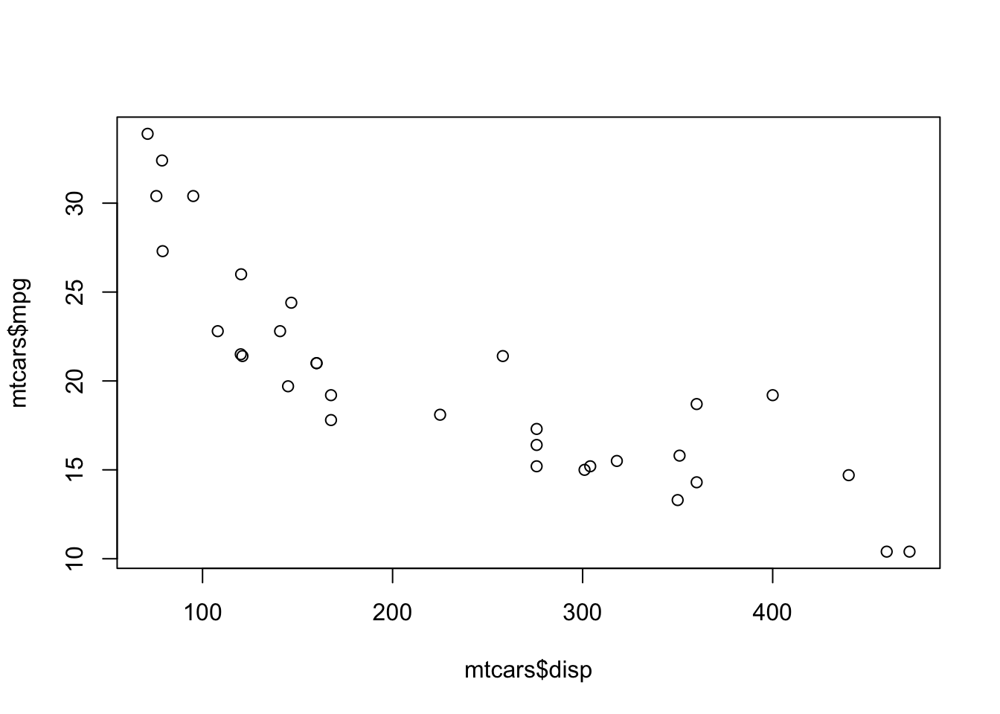
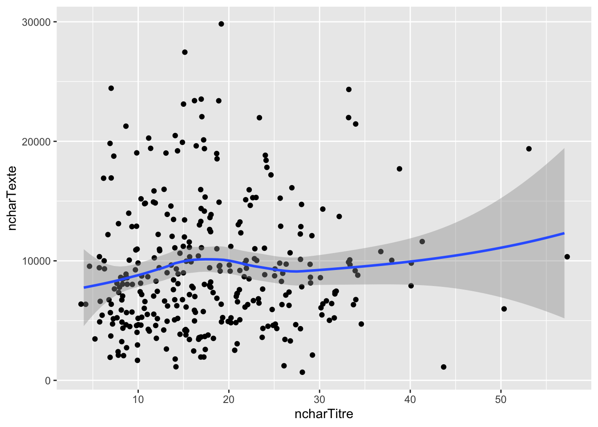
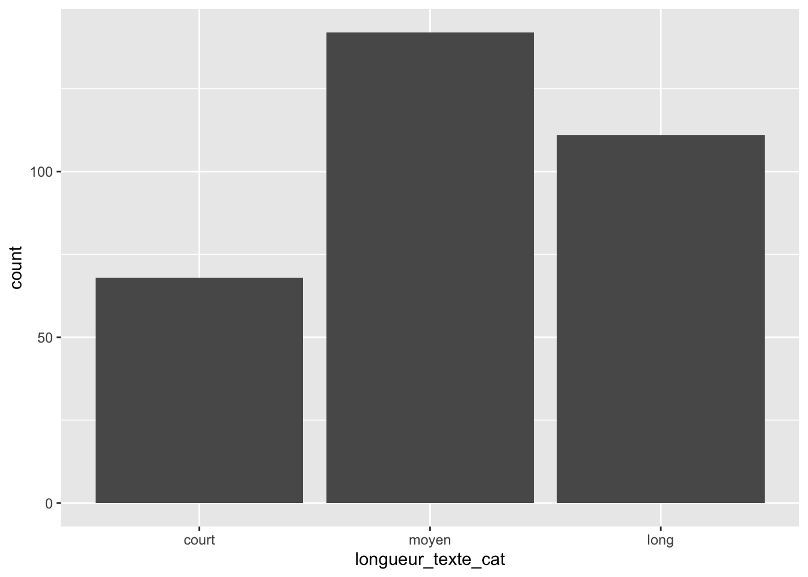
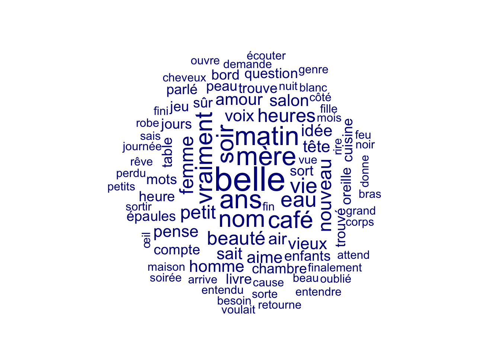
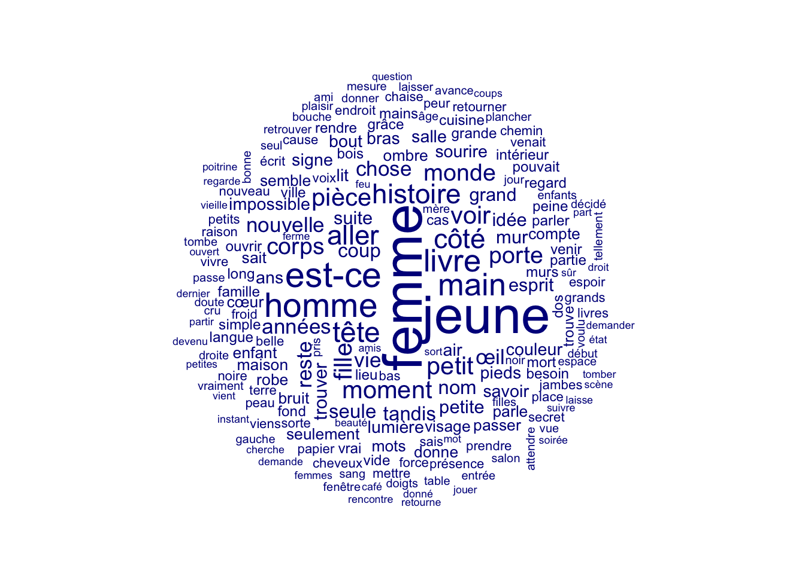
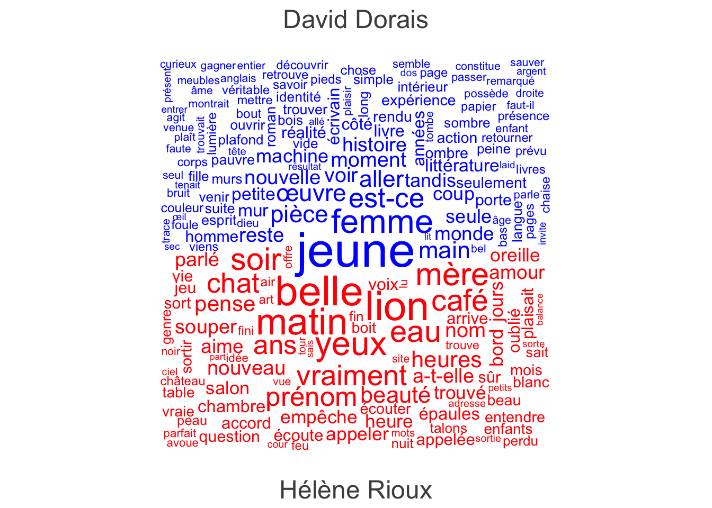
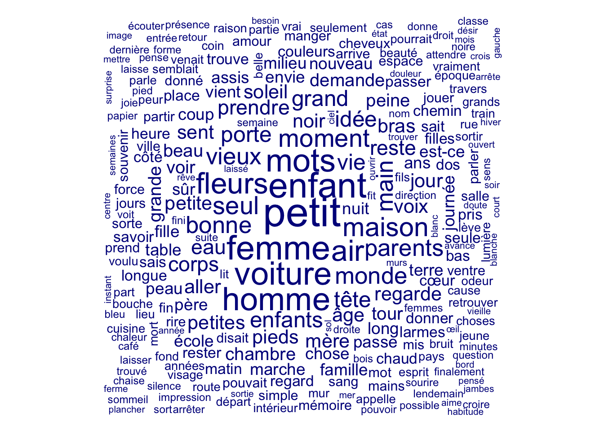
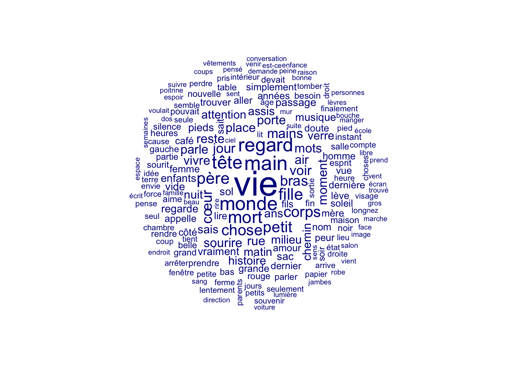
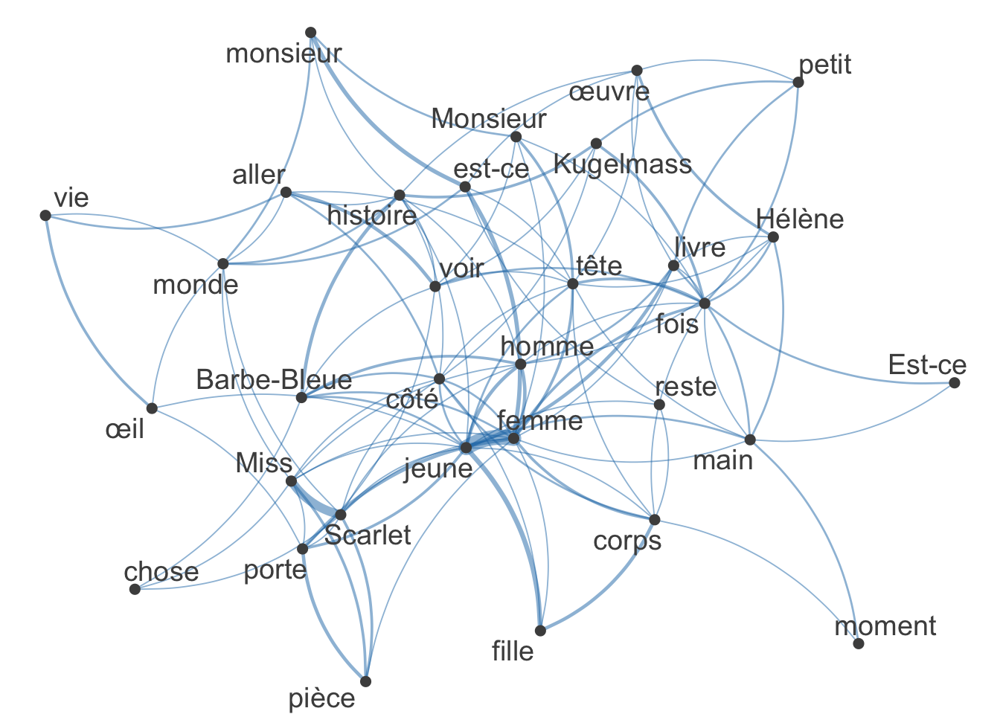

romans <- c("Illusions perdues", "Le Dernier jour d'un condamné", "La Débâcle")
cat("Mon roman préféré est ", sample(romans, 1), ".", sep = "")Mon roman préféré est Illusions perdues.Les lignes d’instruction (ou lignes de code) contenues dans le présent document, xyz.qmd, et dans le script xyz.R du même dossier sont à peu identiques. La différence entre les deux fichiers, c’est que l’un permet de tirer profit du langage HTML et de présenter un texte suivi avec des titres, des sous-titres, des italiques, des caractères gras, des listes, etc. Dans un script .R, au contraire, les possibilités sont limitées, le script étant d’abord fait pour rassembler des lignes d’instructions qui seront exécutées. Les commentaires généralement courts qu’on trouve dans un script sont précédés d’un ou de plusieurs croisillons #. Cela est plus rebutant à la lecture, mais il est bon de se familiariser avec ces deux formats. Un script .R est plus léger et c’est généralement le format qu’on utilise pour travailler. On recourt au document Quarto (.qmd) pour des présentations devant public. Un aspect très intéressant d’un tel document .qmd est qu’on peut générer, à partir de son contenu, un document .pdf, .word ou .html.
Lorsque vous cliquez sur le bouton Render dans le menu supérieur, un document sera généré comprenant aussi bien le contenu que le résultat des blocs de code. Vous pouvez insérer du code comme ceci:
romans <- c("Illusions perdues", "Le Dernier jour d'un condamné", "La Débâcle")
cat("Mon roman préféré est ", sample(romans, 1), ".", sep = "")Mon roman préféré est Illusions perdues.Vous pouvez également ajouter des options. L’option #| echo: false, par exemple, permet d’imprimer le résultat d’une instruction dans le document généré avec Render, mais non le bloc de code. Cliquez sur Render et voyez le résultat.
romans <- c("Illusions perdues", "Le Dernier jour d'un condamné", "La Débâcle")
cat("Mon roman préféré est ", sample(romans, 1), ".", sep = "")Mon roman préféré est Le Dernier jour d'un condamné.Pour exécuter tout un bloc de code, vous pouvez cliquer sur la flèche à l’extrémité supérieure droite du bloc. Si vous souhaitez plutôt exécuter les instructions d’un même bloc les unes après les autres, et observer le résultat, vous pouvez placer votre curseur au début de la ligne d’instruction à exécuter et appuyez sur ‘COMMAND’ + ‘RETURN’ (raccourci Mac) ou ‘CTRL’ + ‘RETURN’ (raccourci Windows) de votre clavier. Vous pouvez vous pratiquer avec les lignes d’instruction ci-dessous. Chacune appelle de l’aide sur une fonction en particulier. La fenêtre d’aide s’ouvrira dans la partie inférieure droite de RStudio.
?paste()
?str()
?install.packages()
?library()
?nchar()
?data.frame()L’environnement de travail, auquel nous donne accès l’onglent Environment de RStudio (coin supérieur droit), contient tous vos objets. Chaque fois que vous emmagasinez une donnée dans une variable, celle-ci est ajoutée à l’environnement. Cela prend peu de temps pour charger l’environnement (et la mémoire) de RStudio. Voici comment nettoyer partiellement ou entièrement cet environnement:
Il est d’usage de placer en haut de son script les extensions qu’on compte utiliser. On voit d’abord une série d’instructions indiquant à R que si telle extension n’est pas installée déjà, il doit le faire. Ensuite, chacune des extensions est activée individuellement. Il y a des manières plus rapides de faire cela, mais on déplie ici le processus pour être clair.
# Installation des extensions dont nous aurons besoin (si elles ne sont pas déjà installées)
if(!"stringr" %in% rownames(installed.packages())) {install.packages("stringr")}
if(!"readxl" %in% rownames(installed.packages())) {install.packages("readxl")}
if(!"dplyr" %in% rownames(installed.packages())) {install.packages("dplyr")}
if(!"ggplot2" %in% rownames(installed.packages())) {install.packages("ggplot2")}
if(!"quanteda" %in% rownames(installed.packages())) {install.packages("quanteda")}
if(!"quanteda.textplots" %in% rownames(installed.packages())) {install.packages("quanteda.textplots")}
if(!"quanteda.textstats" %in% rownames(installed.packages())) {install.packages("quanteda.textstats")}
if(!"lsa" %in% rownames(installed.packages())) {install.packages("lsa")}
# Activation des extensions
library(readxl) # Extension pour l'importation de fichiers Excel
library(stringr) # Extension pour la manipulation des chaînes de caractères
library(dplyr) # Extension pour la manipulation des structures des tableaux de données
library(ggplot2) # Extension pour la production de graphiques de haute qualité
library(quanteda) # Extension pour le forage textuel
library(quanteda.textplots) # Extension pour le forage textuel
library(quanteda.textstats) # Extension pour l'analyse des collocations
library(lsa) # Extension offrant un antidictionnaire élaboréLes données que nous utiliserons sont contenues dans un dossier séparé du répertoire. Il est judicieux de séparer les scripts, les données et les résultats dans trois dossiers différents. Les données sont emmagasinées dans un fichier Excel. Pour lire un tel fichier, il faut utiliser une extension spécialisée appelée readxl. Ci-dessous, on appelle la fonction read_excel() de cette extension et on lui donne, comme argument path=, le chemin conduisant vers le fichier. On lui indique également (argument sheet=1) que la première feuille de calcul seule est à lire.
Le résultat de cette lecture est emmagasiné dans la variable xyz.
# Lecture des données et assignation à une variable
xyz <- readxl::read_excel("../donnees/XYZ-2015-2022-table-20230205JV.xlsx", sheet = 1)La différence entre un logiciel comme Excel et un environnement de développement comme RStudio, c’est qu’on ne voit pas d’emblée le contenu des objets qu’on importe ou qu’on crée. Il faut soit les appeler directement (on exécute le nom d’un objet), soit cliquer sur l’icône de la grille qui se trouve à droite du nom de l’objet dans la partie Environment, soit encore utiliser différentes fonctions qui renverront les informations utiles sur l’objet. Voici les principales:
On ne verra pas ici les différentes manières de traiter les valeurs nulles ou sans contenu, mais on peut au moins montrer comment les repérer. Dans R, une valeur nulle est indiquée par NA (not available). Cependant, vous quand vous travaillez avec des textes, vous pouvez avoir de nombreuses chaines de caractères tout simplement vides. On voit ci-dessous la manière de repérer ces deux types de valeurs.
On appelle prétraitement les opérations qui doivent être faites aux données métadonnées pour faciliter ou rendre possible leur manipulation. Le prétraitement peut impliquer une réduction des dimensions du jeu de données pour réduire le bruit ou simplement rendre moins lourd les processus ultérieurs. D’autres problèmes requièrent des opérations plus chronophages: corrections de chaînes de caractères, traitement des valeurs nulles, etc. Des logiciels gratuits tel OpenRefine sont de très puissants alliés à cette étape, même si tout peut être fait avec R.
Problème1: les noms de colonnes contiennent des accents et des espaces;
Problème 2: les observations ne sont pas pourvues d’identifiants uniques;
Problème 3: certaines colonnes semblent n’apporter aucune information essentielle;
Problème 4: on aimerait avoir une colonne réservée aux années;
Problème 5: on voudrait que les valeurs numériques soient considérées comme des nombres, non comme des chaines de caractères;
Problème 6: dans la colonne `texte`, les sauts de paragraphes du texte original sont indiqués par “\n”.
Traitons ces problèmes un par un.
Problème 1. Renommer les colonnes
colnames(xyz) <- c("periodique", "titre", "auteur",
"numero", "date", "theme", "uri",
"editeur", "issn_imp", "issn_num",
"citation", "mention_legale", "texte")Problème 2. Créer un identifiant unique. On peut utiliser les numéros de ligne.
xyz$doc_id <- 1:nrow(xyz)Problème 3. Repérer les colonnes inutiles et les éliminer
# La première colonne semble contenir une information redondante. Vérifions:
unique(xyz[ , "periodique"]) # ou table(xyz$periodique)# A tibble: 1 × 1
periodique
<chr>
1 XYZ. La revue de la nouvelleunique(xyz[, "numero"]) # ou table(xyz$numero)# A tibble: 24 × 1
numero
<chr>
1 121
2 122
3 123
4 124
5 125
6 126
7 127
8 128
9 129
10 130
# … with 14 more rowsunique(xyz[, "theme"]) # ou table(xyz$theme)# A tibble: 28 × 1
theme
<chr>
1 Jardin : un enfer de morceaux de paradis
2 Tarot : des destins tout tracés ?
3 Récompenses : onze nouvelles sur le podium
4 Thème libre
5 Séductions : entre flirt, désir, charme, fantasme, chavirement et mystère
6 Hors-frontières
7 Nouvelle d'une plage : à l'écart du tourisme de masse
8 Ponctuation : signe que les mots ne peuvent pas tout dire
9 Concours de nouvelles XYZ
10 Le double : l'autre, c'est moi
# … with 18 more rows# Exercice: poursuivez la vérification avec les colonnes `uri`, `editeur`, `issn` (x2), `mention_legale`. ###
# unique(...[, ...])# Solution au problème no 3
# Créons un vecteur avec les colonnes inutiles (on utilise pour cela la fonction de concaténation c( ) )
colonnes_a_supprimer <- c("periodique", "editeur", "issn_imp", "issn_num", "mention_legale", "uri", "citation")
# On élimine l'ensemble des colonnes inutiles d'un seul coup.
xyz[, colonnes_a_supprimer] <- NULLProblème 4. On veut créer une colonne contenant les années.
# Il faut extraire les années de la colonne `date`. On utilise pour cela l'extension stringr.
xyz$annee <- stringr::str_extract(xyz$date, "[0-9]+")
### Exercice: éliminez la colonne `date`, qui ne sert plus à rien. ###
# xyz$... <- ...Problème 5. Cette colonne `annee`, de même que la colonne `numero`, devraient être de type `numeric`, non de type `chr`.
# La fonction as.integer() force la conversion du type chararcter en type integer.
xyz$numero <- as.integer(xyz$numero)
# Faites la même opération pour la colonne appelée `numero`:
# xyz$... <- ...(xyz$...)Problème 6. Remplacer un symbole dans une longue chaine de caractères (un texte).
# Observons tout d'abord un texte en particulier
# xyz$texte[1]
# Remplaçons par une espace simple le symbole `\n`
xyz$texte <- gsub(pattern = "\n", replacement = " ", x = xyz$texte, fixed = TRUE)
### Exercice: vérifiez un texte pris au hasard pour voir s'il reste des scories
# xyz$...Enfin, par souci de lisibilité, réordonnons la séquence des colonnes.
xyz <- xyz[, c("doc_id", "auteur", "titre", "numero", "annee", "theme", "texte")]Maintenant que le tableau ne présente plus de problèmes apparents, on peut commencer à explorer les données. On veut pour l’essentiel se familiariser avec le contenu du tableau, observer des distributions, voir si des variables sont corrélées. Il est bon de séparer dans un premier temps l’exploration des métadonnées de celle des données textuelles.
Une première fonction très utile est table(). Celle-ci calcule le nombre de modalités ou valeurs d’une colonne. On peut ensuite faire des statistiques sur cette distribution.
# La fonction `table( )` permet d'observer le nombre de modalités d'une variable.
distrib_annuelle <- table(xyz$annee)
# distrib_annuelle
# Quelle est la moyenne de cette distribution?
mean(distrib_annuelle)[1] 53.5### Exercice: créez une table pour observer la distribution des thèmes ###
# distrib_themes <- ...Pour ordonner cette table en fonction des valeurs, on peut utiliser la fonction sort( ), auquel on passe l’argument decreasing = TRUE pour que les valeurs se présentent de manière décroissante.
# distrib_themes_ord <- sort(distrib_themes, decreasing = TRUE)
### Exercice: trouvez les noms des 10 principaux contributeurs de la revue ###
# distrib_auteurs <- ...
# distrib_auteurs_ord <- ...Vous trouverez ci-dessous la réponse à la question posée ci-dessus. Vous verrez que différentes syntaxes peuvent produire le même résultat.
Au cours de l’exploration des données, on peut tenter de comprendre s’il existe des corrélations entre des variables. Les corrélations se calculent sur des variables numériques.
Dans l’exemple ci-dessous, on utilise un jeu de données fourni par l’extension de base de R, mtcars. Celui-ci présente différentes marques et modèles de voitures et leurs attributs techniques, telle la distance parcourue par différentes marques selon le volume de leurs moteurs. On voudrait savoir s’il y a une corrélation, positive ou négative, entre le volume du moteur (disp) et la distance/gallon que peut parcourir une voiture.
mtcars[1:3] # Dans le jeu de données, les noms de lignes (rownames) correspondent aux marques. mpg cyl disp
Mazda RX4 21.0 6 160.0
Mazda RX4 Wag 21.0 6 160.0
Datsun 710 22.8 4 108.0
Hornet 4 Drive 21.4 6 258.0
Hornet Sportabout 18.7 8 360.0
Valiant 18.1 6 225.0
Duster 360 14.3 8 360.0
Merc 240D 24.4 4 146.7
Merc 230 22.8 4 140.8
Merc 280 19.2 6 167.6
Merc 280C 17.8 6 167.6
Merc 450SE 16.4 8 275.8
Merc 450SL 17.3 8 275.8
Merc 450SLC 15.2 8 275.8
Cadillac Fleetwood 10.4 8 472.0
Lincoln Continental 10.4 8 460.0
Chrysler Imperial 14.7 8 440.0
Fiat 128 32.4 4 78.7
Honda Civic 30.4 4 75.7
Toyota Corolla 33.9 4 71.1
Toyota Corona 21.5 4 120.1
Dodge Challenger 15.5 8 318.0
AMC Javelin 15.2 8 304.0
Camaro Z28 13.3 8 350.0
Pontiac Firebird 19.2 8 400.0
Fiat X1-9 27.3 4 79.0
Porsche 914-2 26.0 4 120.3
Lotus Europa 30.4 4 95.1
Ford Pantera L 15.8 8 351.0
Ferrari Dino 19.7 6 145.0
Maserati Bora 15.0 8 301.0
Volvo 142E 21.4 4 121.0# Dans ce graphique simple, on pose la variable dépendante en y et l'indépendante en x
plot(mtcars$disp, mtcars$mpg)
Le test de corrélation est un test statistique qui mesure l’interdépendance ou l’association entre des paires de valeurs (deux variables). Plusieurs mesures permettent de vérifier la corrélation entre variables. Nous allons utiliser le coefficient appelé tau de Kendall (compris entre -1 et +1). Selon cette mesure, une corrélation positive est marquée par un tau positif, et inversement pour une corrélation négative. Plus le nombre s’éloigne de 0, plus la corrélation est forte. Vous pourrez lire l’article de Kendall en ligne. Avec les deux variables du jeu de données mtcars, le test montre que la variable dépendante est fortement corrélée à l’indépendante, et négative.
cor.test(mtcars$disp, mtcars$mpg, method = "kendall")
Kendall's rank correlation tau
data: mtcars$disp and mtcars$mpg
z = -6.1083, p-value = 1.007e-09
alternative hypothesis: true tau is not equal to 0
sample estimates:
tau
-0.7681311 Pour faire un test de corrélation avec des données textuelles, il faut créer des variables numériques qui seront mises en relation. Les chaines de caractères ne peuvent pas, telles quelles, être corrélées. Il faut choisir une mesure liée à la question de recherche. On prendra ici un exemple très simple et assez futile, simplement pour indiquer le processus.
Nous allons vérifier s’il y a une corrélation, positive ou négative, entre la longueur des titres et la longueur des textes. Comme mesure, nous pouvons utiliser le nombre de mots que comportent les titres et les textes, ou encore le nombre de caractères de chaque variable. Nous allons retenir cette dernière option par souci de simplicité. Les sommes de caractères pour chaque titre et chaque texte sera faite avec la fonction de base nchar().
xyz$ncharTitre <- nchar(xyz$titre)
xyz$ncharTexte <- nchar(xyz$texte)
# Observons le résultat dans la table
xyz[, c("ncharTitre", "ncharTexte")]# A tibble: 321 × 2
ncharTitre ncharTexte
<int> <int>
1 8 5234
2 8 8474
3 27 4660
4 8 7350
5 20 9140
6 6 10346
7 27 10672
8 7 18760
9 9 5716
10 18 3790
# … with 311 more rowsProcédons maintenant au test de corrélation
cor.test(xyz$ncharTitre, xyz$ncharTexte, method = "kendall")
Kendall's rank correlation tau
data: xyz$ncharTitre and xyz$ncharTexte
z = 1.6758, p-value = 0.09378
alternative hypothesis: true tau is not equal to 0
sample estimates:
tau
0.06377637 La mesure de corrélation, `tau`, est positive, mais très proche de zéro, ce qui dénote une corrélation très faible. On peut projeter ces données dans un diagramme à points
ggplot(xyz, aes(x=ncharTitre, y=ncharTexte))+
geom_jitter()+
geom_smooth()
On peut tirer profit des données numériques ajoutées (longueur des titres et des textes) pour créer de nouveaux champs. Par exemple, on pourrait souhaiter classer les textes selon qu’ils sont “courts”, “moyens” ou “longs”. Un tel type de données est dit “catégorique”. Le type d’objet que nous créerons pour emmagasiner ces données catégoriques s’appelle factor. Ci-dessous, nous allons choisir trois seuils aléatoires pour diviser nos données.
# On peut tout d'abord observer le sommaire statistique et s'en inspirer
summary(xyz$ncharTexte) Min. 1st Qu. Median Mean 3rd Qu. Max.
679 5449 8228 9351 12048 29823 xyz$longueur_texte_cat <- factor( # Création de valeurs catégorielles fondées sur les modalités d'une autre colonne
ifelse(xyz$ncharTexte < 5000, "court",
ifelse(xyz$ncharTexte >10000, "long", "moyen")),
levels = c("court", "moyen", "long") # La fonction `factor()` possède un argument, `levels=` qui permet de déterminer l'ordre des catégories
)
# Exercice: observez la distribution de cette variable avec la fonction table().On peut observer ces proportions à l’aide d’un diagramme à barres.
ggplot(xyz, aes(x = longueur_texte_cat))+
geom_bar(stat = "count")
Pour explorer les données textuelles à proprement parler, soit les textes de fiction contenus dans le tableau sous la variable texte, nous devons transformer l’objet de fond en comble. Comme on l’a vu ci-dessus avec les tests de corrélation, il est plus facile de demander à l’ordinateur de traiter des chiffres que des mots. Le texte sera donc transformé en une grande matrice d’occurrences de type documents-mots, où chaque ligne correspondra à un texte et chaque colonne, à l’un des mots du vocabulaire du corpus. Une matrice est un objet qui ressemble beaucoup à un tableau de données, à ceci près que les valeurs dans les cellules sont toutes identiques. Dans notre grande matrice documents-mots, les valeurs correspondront au nombre de fois que tel mot en colonne apparaît dans tel texte en ligne. La représentation des textes qui en résulte est souvent appelée Bag-Of-Words, un sac de mots, car chaque texte est conçu comme un ensemble particulier de mots dont l’ordre d’apparition n’est pas pris en compte. Cette représentation repose sur l’idée qu’un texte qui contient un grand nombre de fois les mots “enfant”, “parent” et “lien” parlera vraisemblablement de la relation parent-enfant.
Pour faire face aux limites de ce modèle un peu grossier, mais aisé à concevoir, les spécialistes ont mis au point plusieurs techniques, telle l’application d’antidictionnaires aux matrices pour éliminer les mots fonctionnels ou sans intérêt dans un contexte de recherche spécifique. On peut également filtrer les matrices selon des seuils d’occurrences inférieurs ou supérieurs, on peut les pondérer pour augmenter le poids de mots (par exemple ceux qui sont particulièrement représentatifs d’un texte par rapport à tous les autres textes du corpus) et les normaliser (pour mieux comparer des textes de longueurs différentes). On peut également forger des n-grammes fondés sur des expressions d’intérêt pour la recherche ou sur des mesures de collocation. Nous ne ferons pas toutes ces opérations ici, mais il est important que vous sachiez que les limites inhérentes au BOW ont fait l’objet de nombreuses recherches et suscité des stratégies pour en neutraliser les effets.
Également, il est bon de savoir que d’autres représentations du texte ont fait leur apparition depuis le début du siècle (word2vec, BERT, etc.), dont on ne parlera pas ici. Le fameux modèle de langue GPT-3, derrière ChatGPT, est le dernier en date et repose sur un entrainement sur plusieurs milliards de mots.
Dans la suite de l’atelier, nous allons donc transformer le corpus textuel en une grande matrice d’occurrences de type documents-mots.
Pour faire l’ensemble des opérations, nous allons recourir à l’extension Quanteda, créée spécifiquement pour l’analyse statistique des textes. Il existe plusieurs autres extensions de ce type (udpipe, text2vec, tm, lsa, tidytext, etc.). On retient ici Quanteda en raison de la cohérence de la syntaxe et de la grande variété des analyses qu’elle permet.
On gagnera à consulter la page du Comprehensive R Archive Network (CRAN) consacrée au Natural Language Processing.
Le processus de transformation de l’objet tableau de données en grande matrice se fait, dans Quanteda, en trois grandes étapes.
La première étape est la création d’un corpus avec la fonction corpus(). On y précise la colonne des identifiants uniques et la colonne contenant le texte à analyser;
La deuxième étape est la tokénisation des textes du corpus. On peut à cette étape se servir d’un antidictionnaire pour éliminer les mots fonctionnels;
La troisième étape est le passage entre cet objet “tokens” à la dfm (document-feature matrix).
Les métadonnées suivent par défaut chacune des transformations et permettront, une fois la dfm construite, de filtrer les documents en ligne avec les métadonnées.
Pour plus d’information sur chacune des fonctions, consultez la documentation. Exemple:
?quanteda::corpus()Les arguments de la fonction corpus() permettent de préciser les colonnes du tableau correspondant aux identifiants uniques et aux textes.
xyz_corp <- quanteda::corpus(xyz, docid_field = "doc_id", text_field = "texte")
head(xyz_corp, 2)Corpus consisting of 2 documents and 8 docvars.
1 :
"Elle l'appellerait Ozanne. Ozanne. Deux fois née. Hier, mort..."
2 :
"Depuis une douzaine d'années, je consacre une bonne partie d..."La transformation du corpus en tokens correspond à la séparation des mots ou n-grammes de chaque texte. C’est ce qu’on appelle la tokénisation. Plusieurs opérations peuvent être faites à la volée.
xyz_toks <- tokens(xyz_corp,
remove_punct = TRUE, # On supprime à la volée la ponctuation
remove_symbols = TRUE, # On supprime à la volée les symboles
remove_numbers = FALSE, # On pourrait supprimer à la volée les nombres
remove_separators = TRUE) |> # On supprime les blancs laissés par la tokénisation
tokens_split(separator = "'", valuetype = "fixed") # On force la tokénisation à partir de l'apostrophe
head(xyz_toks, 2)Tokens consisting of 2 documents and 8 docvars.
1 :
[1] "Elle" "l" "appellerait" "Ozanne" "Ozanne"
[6] "Deux" "fois" "née" "Hier" "morte"
[11] "au" "berceau"
[ ... and 925 more ]
2 :
[1] "Depuis" "une" "douzaine" "d" "années" "je"
[7] "consacre" "une" "bonne" "partie" "de" "mon"
[ ... and 1,493 more ]# On transforme l'objet tokens en dfm
xyz_dfm <- dfm(xyz_toks) |>
# Retrait des mots fonctionnels avec l'antidictionnaire lsa (inspecter le dictionnaire!)
dfm_remove(lsa::stopwords_fr) |>
# Un mot doit être présent dans au moins 15% des documents (élimination des hapax)
dfm_trim(min_docfreq = 0.15,
# Un mot ne doit pas être présent dans plus de 70% des documents du corpus
max_docfreq = 0.7,
# L'argument suivant précise que la valeur indiquée dans min_docfreq= est une proportion
docfreq_type = "prop")
head(xyz_dfm, 2)Document-feature matrix of: 2 documents, 401 features (81.05% sparse) and 8 docvars.
features
docs fille mur lit vieille femme cas semble air doute donner
1 3 5 2 2 2 1 1 1 1 2
2 1 0 0 0 5 1 0 1 0 0
[ reached max_nfeat ... 391 more features ]### Exercice: modifiez les seuils et voyez l'effet sur les dimensions de l'objet!
# Pour voir les dimensions de l'objet, vous n'avez qu'à l'apeller ainsi:L’extension Quanteda rend aisée l’exploration du vocabulaire de sous-ensembles de textes. Ces sous-ensembles sont générés grâce aux métadonnées que les objets corpus-tokens-dfm portent avec eux. La fonction dfm_subset() a un argument subset= qui permet d’insérer une expression formelle agissant comme filtre.
Dans le premier exemple, nous allons explorer les vocabulaires (filtrés) des textes parus en 2015 et en 2021. Le résultat sera transposé en un nuage de mots où ceux qui sont les plus fréquents seront magnifiés et positionnés au centre du nuage.
xyz_dfm_rioux <- dfm_subset(xyz_dfm, subset = auteur == "Hélène Rioux")
xyz_dfm_dorais <- dfm_subset(xyz_dfm, subset = auteur == "David Dorais")
set.seed(100)
textplot_wordcloud(xyz_dfm_rioux, max_words = 200)
set.seed(100)
textplot_wordcloud(xyz_dfm_dorais, max_words = 200)
Si on veut mieux comparer les deux sous-groupes, on peut utiliser le code suivant, un peu plus sophistiqué.
dfm_comp_auteurs <- xyz_corp |>
corpus_subset(auteur %in% c("Hélène Rioux", "David Dorais")) |>
tokens(remove_punct = TRUE,
remove_symbols = TRUE,
remove_numbers = FALSE,
remove_separators = TRUE) |>
tokens_split(separator = "'", valuetype = "fixed") |>
dfm()|>
dfm_remove(lsa::stopwords_fr) |>
dfm_trim(min_docfreq = 0.15,
max_docfreq = 0.7,
docfreq_type = "prop")
dfm_comp_auteurs_groupes <- dfm_group(dfm_comp_auteurs, dfm_comp_auteurs$auteur)
textplot_wordcloud(dfm_comp_auteurs_groupes, comparison = TRUE, max_words = 300,
color = c("blue", "red"))
On pourrait maintenant souhaiter comparer les vocabulaires dominants de numéros thématiques.
xyz_dfm_th_jardin <- dfm_subset(xyz_dfm, subset = theme == "Jardin : un enfer de morceaux de paradis")
xyz_dfm_th_YOLO <- dfm_subset(xyz_dfm, subset = theme == "YOLO (You Only Live Once) : hardis, téméraires, écervelés, aventureux, fonceurs, délurés")
# Comparaison des vocabulaires de numéros thématiques
set.seed(100)
textplot_wordcloud(xyz_dfm_th_jardin)
set.seed(100)
textplot_wordcloud(xyz_dfm_th_YOLO)
#### Exercice: choisissez deux autres numéros thématiques et comparez les vocabulaires. Vous pouvez utiliser la voie simple ou reprendre le bloc d'instructions enchainées ci-dessus.L’exploration de textes fondée sur la fréquence (brute, pondérée ou normalisée) et la technique du “sac de mots” (BOW) ne dit rien du contexte immédiat dans lequel les mots sont plongés. Dans le nuage de mots généré à partir des textes de l’auteur David Dorais, on a vu que “jeune” et “femme” sont les mots dominants, suivis de près par “homme”. De là à dire que les textes de Dorais s’intéresse à la “jeune femme”, il y a un pas qu’on ne peut franchir avant d’avoir vérifié si les mots apparaissent bel et bien, de manière récurrente, dans le même contexte. L’une des manières de se rapprocher du texte et de vérifier quels couples de mots s’attirent, apparaissent souvent dans un même contexte, est de créer un réseau de cooccurrence.
Selon Kboubi, Habacha, and BenAhmed (2010), “un réseau de cooccurrence est un réseau de termes où chaque noeud représente un terme et un arc entre deux nœuds représente la relation de cooccurrence entre les deux termes concernés. Ce réseau permet d’identifier les termes qui apparaissent souvent ensemble au sein d’une même fenêtre mais pas nécessairement juxtaposés.”
Le réseau de cooccurrence ne permet pas encore de savoir si “jeune” et “femme” se suivent dans cet ordre dans les textes de D. Dorais, mais il permettra, à mi-chemin entre le “sac de mots” et la plongée dans le texte par une lecture rapprochée, de vérifier les associations.
L’extension Quanteda offre une fonction qui permet, à partir d’un objet tokens ou dfm, de construire une matrice de cooccurrence qui puisse être projetée sous forme de diagramme de réseau. C’est cette fonction, fcm(), que nous utiliserons ci-dessous. Nous allons devoir réduire considérablement les dimensions de cette matrice en utilisant un nombre réduit de cooccurrences – les plus fréquentes –, sans quoi le diagramme sera impossible à déchiffrer. Mais vous pouvez modifier tous les paramètres et observer les effets sur le diagramme.
# On fournit en entrée l'objet tokens créé auparavant
xyz_fcm <- xyz_toks |>
# On ne retient que les tokens trouvés dans les textes d'un auteur
tokens_subset(subset = auteur == "David Dorais") |>
# Retrait des mots fonctionnels avec l'antidictionnaire lsa
tokens_remove(lsa::stopwords_fr) |>
# On choisit ici une fenêtre contextuelle de 10 mots
fcm(context = "window", window = 10, tri = FALSE)
# On repère ici couples de mots ayant un coefficient de cooccurrence égal ou supérieur à 30
principaux_mots <- names(topfeatures(xyz_fcm, 30))
# La matrice de cooccurrence est réduite à ses principaux mots, et projetée sous la forme d'un diagramme de réseau
set.seed(100)
textplot_network(fcm_select(xyz_fcm, principaux_mots), min_freq = 0.7)
# On augmente encore le seuil pour rendre le graphique plus facile à interpréterL’épaisseur du lien et la proximité entre les mots “jeune” et “femme” montrent que les mots s’appellent fortement. On peut retourner à la matrice pour voir exactement combien de fois les deux termes cooccurrent dans une fenêtre de 10 mots.
# Conversion de l'objet fcm en simple matrice
xyz_cooc_matrice <- convert(xyz_fcm, "matrix")
# On peut observer la structure de cet objet. On voit que les noms de lignes et de colonnes correspondent aux mots des textes
str(xyz_cooc_matrice) num [1:3879, 1:3879] 6 1 1 0 0 1 0 0 0 4 ...
- attr(*, "dimnames")=List of 2
..$ features: chr [1:3879] "fois" "fille" "déesse" "mur" ...
..$ features: chr [1:3879] "fois" "fille" "déesse" "mur" ...# On peut donc indexer la matrice avec les mots à observer. La valeur renvoyée correspondra au nombre de fois que ces mots cooccurrent dans la fenêtre de 10 mots.
xyz_cooc_matrice["jeune", "femme"][1] 22On peut souhaiter se rapprocher davantage encore de la texture des mots et vérifier de visu, sans pour autant lire intégralement tous les textes, si “jeune” et “femme” se suivent dans cet ordre et, le cas échéant, quels mots viennent tout juste avant et après la cooccurrence. On utilisera alors un outil bien connu, le concordancier, que Quanteda met à notre portée avec la fonction kwic(). Cette fonction, dont le nom correspond à keywords-in-context, peut prendre en entrée un objet corpus ou encore un objet tokens. Un argument, window=, permet d’indiquer le nombre de mots que l’on souhaite obtenir de chaque côté du mot-pivot. Ce dernier est précisé à l’aide de l’argument pattern=, ce qui veut dire que vous pouvez utiliser une expression régulière (regex) pour attraper différentes formes d’un mot.
xyz_corp |>
corpus_subset(subset = auteur == "David Dorais") |>
tokens(remove_punct = TRUE,
remove_symbols = TRUE,
remove_numbers = FALSE,
remove_separators = TRUE) |>
# tokens_remove(lsa::stopwords_fr) |>
kwic(pattern = phrase("jeunes? femmes?"),
window = 3,
valuetype = "regex") |> head()Keyword-in-context with 6 matches.
[102, 1295:1296] bleues mais la | jeune femme | a les pieds
[108, 683:684] par ceci la | jeune femme | de l'histoire ne
[108, 779:780] Ensuite la mystérieuse | jeune femme | accepte d'épouser cet
[108, 852:853] a invité la | jeune femme | ainsi que sa
[108, 930:931] cupidité de la | jeune femme | qui la pousse
[108, 1009:1010] petit cabinet La | jeune femme | est tellement curieuseCe concordancier est la dernière étape de notre exploration, mais plusieurs autres techniques sont à votre portée pour explorer et analyser vos données textuelles!
Pour toute question ou commentaire: pascal.brissette@mcgill.ca
Baillargeon, Sophie. s. d. « R pour scientifique ». Consulté le 31 août 2022. https://stt4230.rbind.io/.
Baruffa, Oscar. s. d. Big Book of R. Consulté le 1 septembre 2022. https://www.bigbookofr.com/.
Claveau, Vincent, Ewa Kijak, et Olivier Ferret. s. d. « Explorer le graphe de voisinage pour améliorer les thésaurus distributionnels ».
Digital Scholarship Hub - McGill University, réal. 2022. Planning Your Text Analysis Project. https://www.youtube.com/watch?v=6DNmoRHRQ-g.
Goulet, Vincent. s. d. « Introduction à R ». Consulté le 29 août 2022. https://vigou3.github.io/raquebec-atelier-introduction-r/.
Grimmer, Justin. 2022. Text as Data: A New Framework for Machine Learning and the Social Sciences. Princeton.
Guay, Jean-Herman. s. d. « Statistiques en sciences humaines et sociales avec R ». Consulté le 19 août 2022. https://dimension.usherbrooke.ca/.
Jockers, Matthew L. 2014. Text Analysis with R for Students of Literature. Quantitative Methods in the Humanities and Social Sciences. Springer International Publishing. https://doi.org/10.1007/978-3-319-03164-4.
Kboubi, Férihane, Anja Habacha Chabi, et Mohamed BenAhmed. s. d. « L’exploitation des relations d’association de termes pour l’enrichissement de l’indexation de documents textuels ».
Lebart, Ludovic, Bénédicte Pincemin, et Céline Poudat. 2019. Analyse des données textuelles. Mesure et évaluation 11. Québec: Presses de l’Université du Québec.
Paradis, Emmanuel. 2002. « R pour les débutants ». https://cran.r-project.org/doc/contrib/Paradis-rdebuts_fr.pdf.
Series, QCBS R. Workshop. s. d. « Ateliers du Centre québécois des sciences de la biodiversité ». Consulté le 20 août 2022. https://r.qcbs.ca/fr/.
Silge, Julia, et David Robinson. s. d. Text Mining with R. Consulté le 6 mars 2020. https://www.tidytextmining.com/.